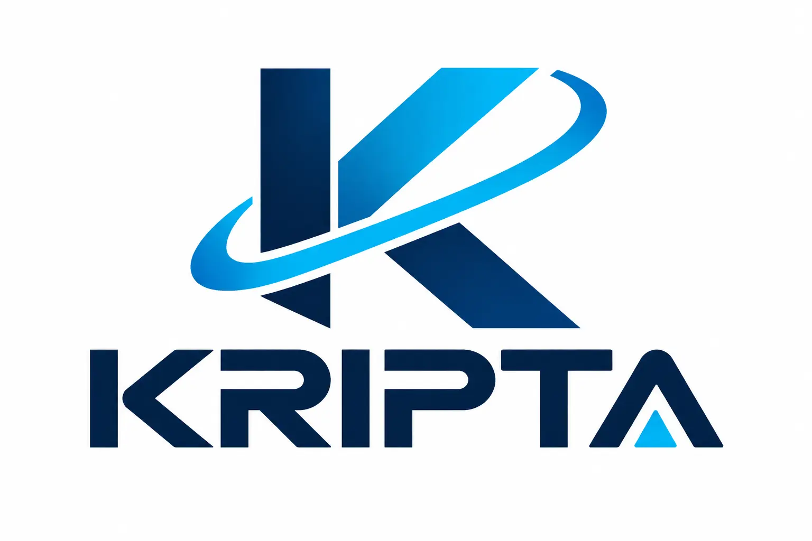

Inteligencia Empresarial
- Due diligence integral
- Verificación de proveedores
- Evaluación de socios estratégicos
- Validación de aspirantes a cargos clave

Agendar ConsultaInteligencia Corporativa · Análisis de Riesgos · OSINT
Reducimos la incertidumbre empresarial mediante investigación documental, análisis reputacional y due diligence.
"Las mejores decisiones no se toman con intuición. Se toman con información verificable."
Nuestras Capacidades
Sistemas de verificación y análisis diseñados para proteger la integridad de su empresa.
Análisis exhaustivo para:
Evaluación técnica de:
Inteligencia de fuentes abiertas aplicada a la seguridad corporativa y análisis de entorno.
Excelencia Operativa
Un proceso riguroso de siete etapas para garantizar la veracidad de la información.
Ingreso de requerimientos y establecimiento de objetivos.
Determinación de las dimensiones y profundidad de la investigación.
Búsqueda activa en fuentes abiertas, cerradas y registros oficiales.
Cruce de datos para detectar inconsistencias o patrones.
Procesamiento crítico de la información recolectada.
Clasificación del nivel de riesgo detectado según la matriz KRIPTA.
Entrega de resultados con conclusiones claras y recomendaciones.
Sobre Nosotros
En KRIPTA, entendemos que la información es el activo más valioso de cualquier organización. Nos especializamos en transformar datos dispersos en inteligencia accionable.
Nuestra metodología combina la rigurosidad del análisis documental con la agilidad de las herramientas OSINT modernas.
Contacto
Proteja su empresa de riesgos invisibles. Agende una consulta inicial para definir el alcance de su investigación.